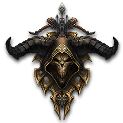

디아블로3
2012년 5월 15일 블리자드 엔터테인먼트가 출시한 액션 RPG로 디아블로 시리즈의 세 번째 작품. 2008년 WWI에서 최초 발표 후 4년 만에 정식 출시하였다.
 월드 오브 워크래프트, 스타크래프트 2와 마찬가지로 PC판은 자막/음성 모두 한글화되었다. 패키지판은 손오공(기업)에서 출시하고, PC방 사업은 넷마블에서 담당한다. 관련 기사. 2015년 여름에 전세계 누적 판매량이 3,000만장을 넘어섰다.
세 대악마는 패했으나 천상과 지옥, 성역을 가르던 세계석이 오염되어 티리엘의 손에 파괴되었다. 세계석이 파괴되며 경계가 사라진 지 20년 뒤, 성역 세계의 밤하늘에 돌연 혜성이 출현하여 트리스트럼으로 떨어지고, 성역 세계는 불길한 기운에 휩싸이는데……